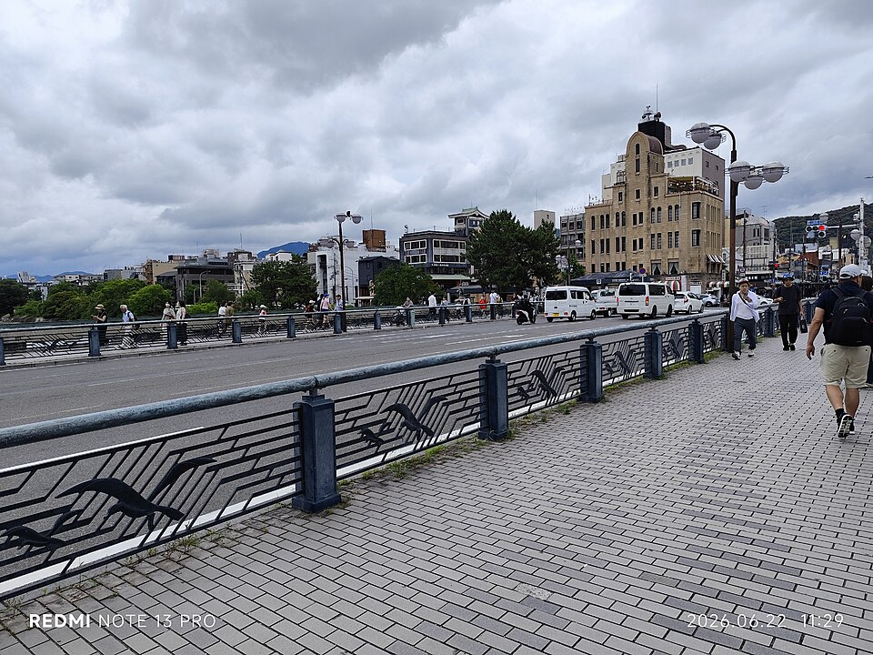
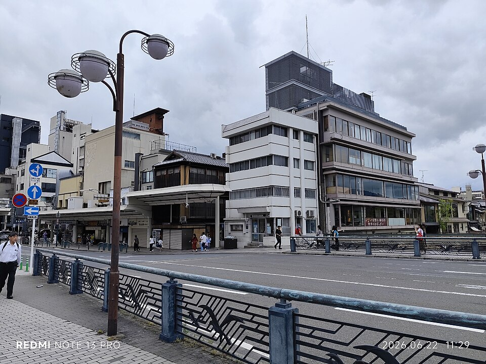
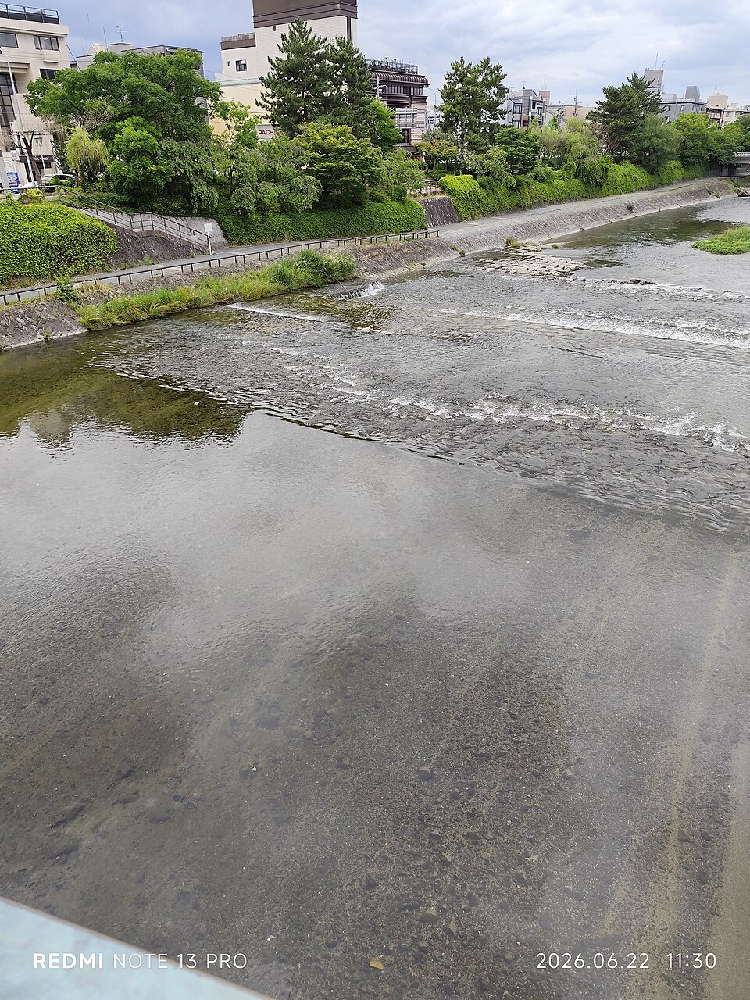

12Река Kamo
Центр · ~15-20 мин пешком от отеля




Река делит исторический центр на две части, вдоль неё тянется парк почти на всём протяжении. Летом рестораны квартала Pontocho ставят деревянные террасы kawadoko прямо над водой. Хорошее место для вечерней прогулки без толп и без подсветки.
Бесплатно, открыто всегда. Ближайший мост от отеля - Shichijo Ohashi.
Рядом


Фото: Wikimedia Commons (лицензии под каждым фото). Часы и цены проверены 20.10.2026 по путеводителям и официальным сайтам - перепроверь перед визитом, сезонно меняются. ← ко всем местам